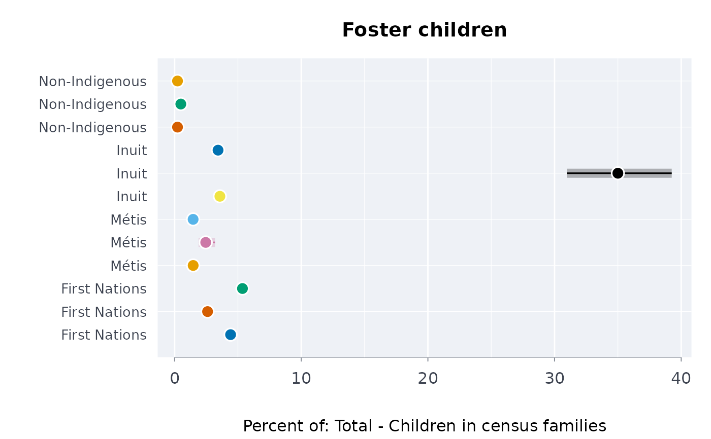

The share of a population with a characteristic, from the census profile
Source:R/census.R
profshr.RdThe share of a group with a characteristic of the 2021 Census Indigenous Population Profile (foster children among children, speakers of an Indigenous language, households needing major repairs, ...), with an approximate confidence interval that carries the long-form sample and the random rounding of the counts.
Arguments
- x
A
cnsprof.- num
The characteristic counted: its
chaid, or its name exactly.- den
The characteristic it is a share of (id or name); default its parent.
- smpfrac
The long-form sampling fraction (default 0.25); full-count characteristics use 1 whatever is given.
- deff
Design effect (default 1).
- conflvl
Confidence level of the share's limits (default 0.95).
- roubase
The base of the random rounding (default 5, Statistics Canada's); 1 for counts that are not rounded.
Value
A data frame of class rmbl_profile_share with geo,
dguid, residence, gender, age, group,
numerator, denominator, estimate (percent),
lower, upper, quality; ready for indgap
and dstntst. plot() draws it.
Details
The share is the numerator's count over the denominator's (by default the numerator's parent in the profile's hierarchy), for each geography, gender, age group and group. Statistics Canada does not publish standard errors for the profile, so the interval is an approximation built from what is known about how the counts were made:
a long-form ("25% sample") count is estimated from a sample of about one household in four, so the share has variance \(d (1 - f) p (1 - p) / (f N)\) for a sampling fraction \(f\) (
smpfrac, 0.25) of a population of \(N\) (the denominator) and a design effect \(d\) (deff, 1 by default: the clustering of people in households raises it, and a value of 1.5 to 2 is prudent for characteristics shared within a household). On reserves (rows whoseresidenceis"On reserve") every household got the long form, so \(f = 1\) there and the sampling term vanishes;every count is randomly rounded, up or down without bias, to a multiple of \(b\) (
roubase, 5). Averaged over the remainders, that adds variance \(c = (b^2 - 1)/6\) to each count (4 for \(b = 5\)), so \(c (1 + p^2) / N^2\) to the share (the only error of a full-count share).
In all, $$V =
\frac{d (1 - f) p (1 - p)}{f N} + \frac{c (1 + p^2)}{N^2}.$$ The interval is Wilson's at the
effective sample size \(n_e = \max(p(1-p), 1/N) / V\) (the floor \(1/N\)
keeps a share of 0 or 100% from an infinite \(n_e\)), so it stays inside 0
and 100. It does not carry non-response (see tnrlf) or the edit and
imputation error, so it is narrower than the full error; treat it as a lower
bound on the uncertainty.
References
Statistics Canada (2022). Guide to the Census of Population, 2021, chapter 9 (data quality) and chapter 10 (confidentiality and random rounding). Catalogue no. 98-304-X.
Wilson EB (1927). Probable inference, the law of succession, and statistical inference. Journal of the American Statistical Association 22(158):209-212. doi:10.1080/01621459.1927.10502953
Examples
p <- cnsprof(indiex("censuspop"))
# children who are foster children, by province, First Nations, Metis, Inuit
# and non-Indigenous
fc <- profshr(p, "Foster children", "Total - Children in census families")
fc <- fc[
fc$age == "0 to 14 years" &
fc$group %in%
c("First Nations", "M\u00e9tis", "Inuit", "Non-Indigenous"),
]
head(fc)
#> ╭── Share of a population with a characteristic ──────────────────────────────╮
#> │ Edition 2021 Census of Population (DGUID vintage) │
#> │ Numerator Foster children │
#> │ Denominator Total - Children in census families │
#> │ Rows 6 │
#> │ Geographies Canada; Newfoundland and Labrador │
#> │ Ages 0 to 14 years │
#> │ Estimate percent │
#> │ │
#> │ geo dguid │
#> │ ------------------------- -------------- │
#> │ Canada 2021A000011124 │
#> │ Canada 2021A000011124 │
#> │ Canada 2021A000011124 │
#> │ Newfoundland and Labrador 2021A000210 │
#> │ Newfoundland and Labrador 2021A000210 │
#> │ Newfoundland and Labrador 2021A000210 │
#> │ │
#> │ geo residence │
#> │ ------------------------- ----------------------------------- │
#> │ Canada Total - Residence on or off reserve │
#> │ Canada On reserve │
#> │ Canada Off reserve │
#> │ Newfoundland and Labrador Total - Residence on or off reserve │
#> │ Newfoundland and Labrador On reserve │
#> │ Newfoundland and Labrador Off reserve │
#> │ │
#> │ geo gender age group │
#> │ ------------------------- -------------- ------------- ------------- │
#> │ Canada Total - Gender 0 to 14 years First Nations │
#> │ Canada Total - Gender 0 to 14 years First Nations │
#> │ Canada Total - Gender 0 to 14 years First Nations │
#> │ Newfoundland and Labrador Total - Gender 0 to 14 years First Nations │
#> │ Newfoundland and Labrador Total - Gender 0 to 14 years First Nations │
#> │ Newfoundland and Labrador Total - Gender 0 to 14 years First Nations │
#> │ │
#> │ geo numerator denominator estimate │
#> │ ------------------------- --------- ----------- -------- │
#> │ Canada 11,735 265,405 4.422 │
#> │ Canada 2,350 90,270 2.603 │
#> │ Canada 9,385 175,135 5.359 │
#> │ Newfoundland and Labrador 95 5,125 1.854 │
#> │ Newfoundland and Labrador 35 705 4.965 │
#> │ Newfoundland and Labrador 60 4,425 1.356 │
#> │ │
#> │ geo 95% CI quality │
#> │ ------------------------- -------------- ------- │
#> │ Canada [4.288, 4.559] ok │
#> │ Canada [2.599, 2.608] ok │
#> │ Canada [5.179, 5.544] ok │
#> │ Newfoundland and Labrador [1.311, 2.616] ok │
#> │ Newfoundland and Labrador [4.437, 5.551] ok │
#> │ Newfoundland and Labrador [0.875, 2.095] ok │
#> │ │
#> │ Highest share: Canada, Off reserve (5.359); lowest: Newfoundland and │
#> │ Labrador, Off reserve (1.356). │
#> │ Their intervals do not overlap: the gap is more than sampling error. │
#> │ │
#> │ The interval carries the long-form sample and the random rounding, │
#> │ not non-response: read it as a lower bound on the uncertainty. │
#> ╰─────────────────────────────────────────────────────────────────────────────╯
plot(fc[fc$geo == "Canada", ])
